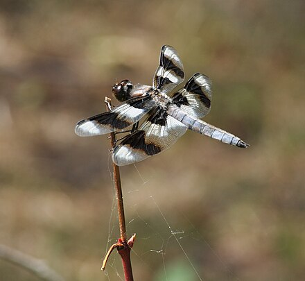
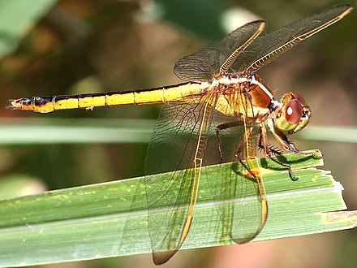
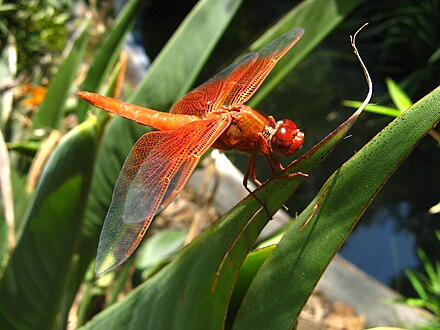

L. forensis, commonly known as the eight-spotted skimmer, is a dragonfly in the Libellulidae family. They are found in western North America and have black and white stripes on their wings.
L. forensis">
L. needhami, also known as Needham's skimmer, is a dragonfly in the Libellulidae family. They are found in the US and Mexico and are very colorful.
L. needhami">
L. saturata, commonly known as the flame skimmer, is a butterfly in the Libellulidae family and is native to the western US. Like their common name implies, these dragonflies are usually bright red and orange.
L. saturata">